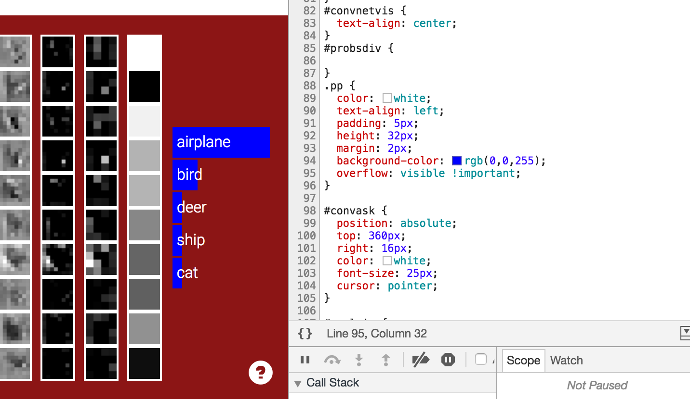

Instructors Box

Teaching Assistance Box

Each Employee Box

Visit the following website. http://cs231n.stanford.edu/ With the help of developer tools:


With the dev tools opened, we can see which elements are changing. Inside id=teaser div, the div with id=convnetvis is changing. So I opened the page source to find which js code is manipulating these changes. I used ctrl-f to find for the
word ‘convnetvis’ because somehow the js will get the element using its id. I can’t find one in this page, so I look for other script tag that linked to external js files. And then I found one match for the id in
http://cs231n.stanford.edu/convnet_demo/convnet_demo.js
and it is actually getting the convnetvis element by id. I found it in the function name draw_network_state.
Responsible JS code:
var draw_network_state = function(preds) { var ww = $(window).width();
var parent_div = document.getElementById('convnetvis'); parent_div.innerHTML = '';
// draw convnet activations var N = net.layers.length; for(var i=0;i<N;i++) {
var L = net.layers[i];
if(L.layer_type == 'softmax') { continue; }
if(ww < 950) {
// we have to collapse. skip conv layers
if(L.layer_type === 'conv') { continue; } }
if(ww < 660) {
// we have to collapse even more. skip pool layers
if(L.layer_type === 'pool') { continue; } }
if(ww < 522) {
if(L.layer_type === 'softmax') { continue; } }
if(ww < 450) {
if(!(i === 0 || i === 4 || i === 9 || i === 14)) {
continue; }
}
/*
if(!(L.layer_type === 'input' || L.layer_type == 'relu' || L.layer_type == 'softmax' ||
L.layer_type)) {
continue; // leave out
}
*/
var div = document.createElement('div'); div.className = 'layer';
if(i === 0) {
// data layer
draw_activations_COLOR(div, L.out_act, 2); // draw Vol into canv div.setAttribute("id", "inputlayer");
} else {
var sx = L.out_act.sx;
if(sx === 32) s = 1;
if(sx === 16) s = 2;
if(sx === 8) s = 4;
if(sx === 4) s = 8;
if(sx === 1) s = 32; draw_activations(div, L.out_act, s);
}
parent_div.appendChild(div); }
// append predictions
var probsdiv = document.createElement('div'); div.setAttribute("id", "probsdiv"); probsdiv.className = 'layer';
for(var k=0;k<5;k++) {
var r = document.createElement('div');
r.className = 'pp';
r.innerHTML = classes_txt[preds[k].k];
$(r).animate({'width' : Math.floor(preds[k].p/num_test_samples*150)}, 200); probsdiv.appendChild(r);
} parent_div.appendChild(probsdiv);
}
search for ‘actmap’ because the canvas tag has ‘actmap’ as class name. then search for ‘canvas’ then I found this function that loads img from convnet_demo/cifar10_batch_50_small.png
var load_data_batch = function() { var data_img_elt = new Image(); data_img_elt.onload = function() {
var data_canvas = document.createElement('canvas');
data_canvas.width = data_img_elt.width;
data_canvas.height = data_img_elt.height;
var data_ctx = data_canvas.getContext("2d");
data_ctx.drawImage(data_img_elt, 0, 0); // copy it over... bit wasteful :(
img_data = data_ctx.getImageData(0, 0, data_canvas.width, data_canvas.height); resources_have += 1;
if(resources_have >= resources_need) { init_done(); } };
data_img_elt.src = "convnet_demo/cifar10_batch_50_small.png"; }
Go to source tab in dev tools. Open the file style.css and find .pp class. Edit the background-color attribute to rgb(0,0,255)
